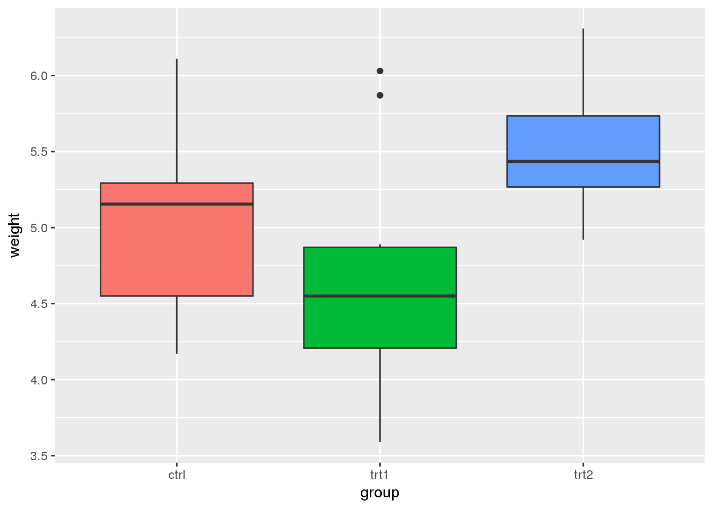
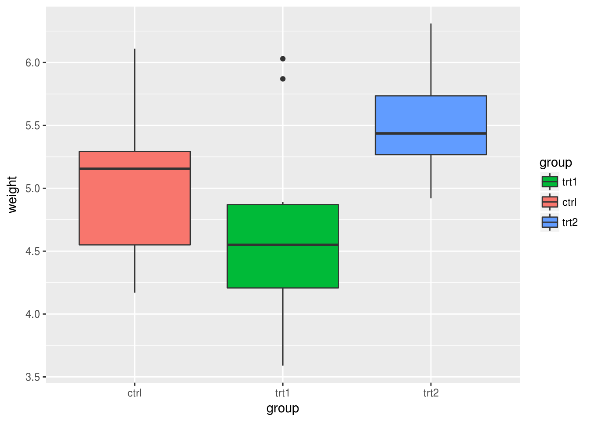
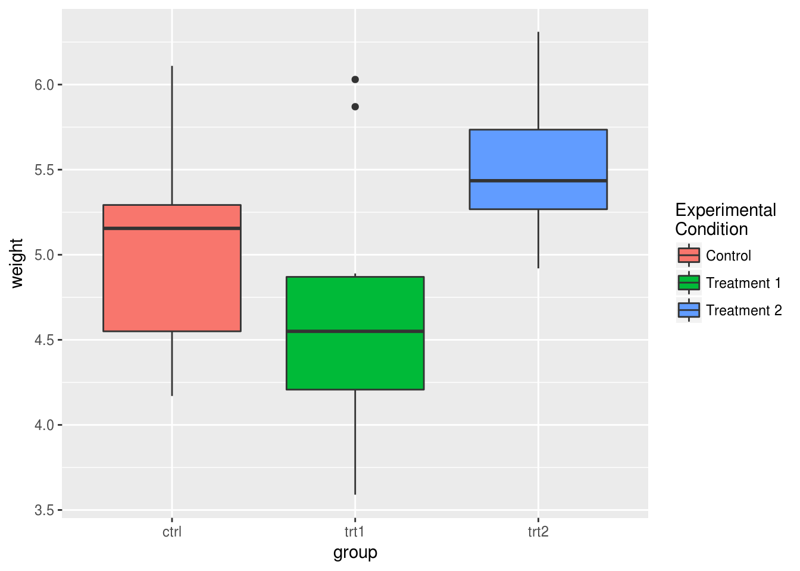
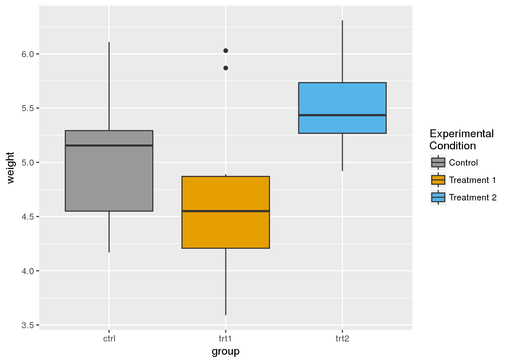
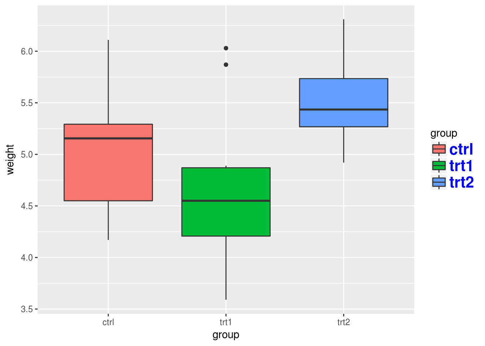
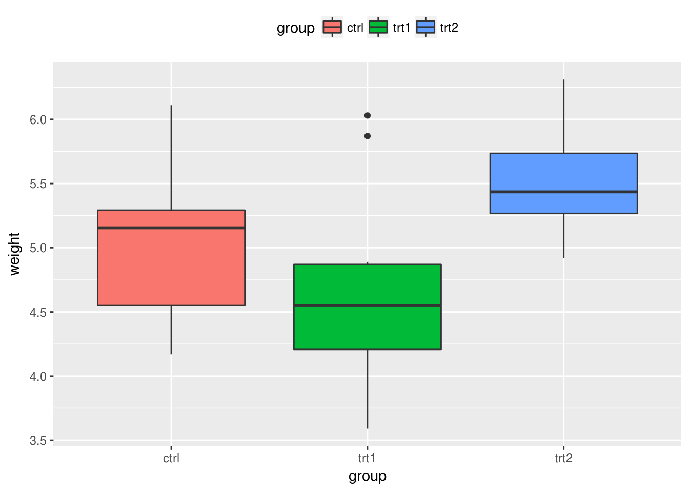
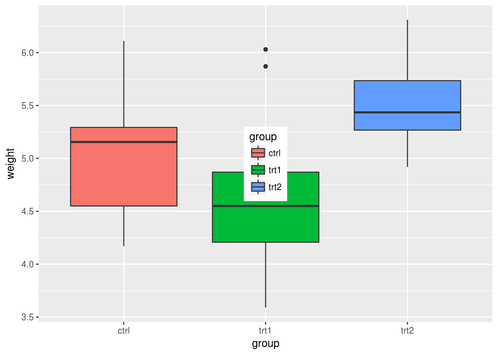

Legendas no ggplot2
Começando de um simples boxplot feito no ggplot2 vamos fazer diversas alterações nas legendas. O gráfico inicial é construido da seguinte forma:
library(ggplot2)
# boxplot simples
bp <- ggplot(data=PlantGrowth, aes(x=group, y=weight, fill=group)) + geom_boxplot()
bpRemovendo totalmente a legenda
Existem diversas maneiras para remover a legenda de um gráfico no ggplot2. A forma mais simples é usar guides(fill = FALSE) com fill sendo o atributo gráfico do qual você deseja remover a legenda.
# aqui definimos fill = FALSE, porque é o atributo do gráfico que relacionamos
# a alguma variável.
bp + guides(fill = FALSE)
# também é possível remover a legenda por meio da escala de cores
# aqui também usamos o scale_fill_discrete, porque associamos fill
# a uma variável anteriormente.
bp + scale_fill_discrete(guide = F)
# o comando a seguir remove todas as legendas, não importa o atributo que ela
# esteja representando.
bp + theme(legend.position="none")Alterando a ordem dos itens
Para alterar a ordem dos itens na legenda do gráfico no ggplot2, usamos o comando da escala de cores.
bp + scale_fill_discrete(breaks=c("trt1","ctrl","trt2"))
bpDependendo de os aspectos gráficos (Ex: cores, formatos, preenchimentos) foram especificados você pode precisar usar alguma das seguintes funções: scale_fill_manual, scale_colour_hue, scale_colour_manual, scale_shape_discrete, scale_linetype_discrete , e assim por diante.
Você pode também querer inverter a ordem dos itens da legenda. Isso pode ser feito de uma das seguintes maneiras.
bp + guides(fill = guide_legend(reverse=TRUE))
bp + scale_fill_discrete(guide = guide_legend(reverse=TRUE))Removendo os títulos da legenda
Algumas vezes é necessário remover o título das legendas do gráfico feito no ggplot2. Veja a seguir algumas maneiras:
# Remove o título apenas da legenda do preenchimento (fill)
bp + guides(fill=guide_legend(title=NULL))
# Remove o título de todas as legendas
bp + theme(legend.title=element_blank())
Modificando texto, cores e rótulos
Para modificar os textos e rótulos das legendas existem duas formas. Uma delas é modificar o data.frame de forma com que os fatores tenham o mesmo nome que você deseja na legenda. Outra forma é usando as funções de scale.
Veja algumas modificações que podem ser feitas por meio das funções de scale. Como a variável group está associada ao atributo fill, usamos as funções scale_fill_xxx.
# usamos scale_fill_discrete porque não queremos alterar as cores padrão,
# mas queremos que cada fator esteja associado a uma cor de tom diferente.
# mudamos aqui os rótulos e o título da legenda.
bp + scale_fill_discrete(name="Experimental\nCondition",
breaks=c("ctrl", "trt1", "trt2"),
labels=c("Control", "Treatment 1", "Treatment 2"))
# usamos scale_fill_manual porque queremos alterar as cores padrão.
# aqui escolhemos as cores da escala hexadecimal.
bp + scale_fill_manual(values=c("#999999", "#E69F00", "#56B4E9"),
name="Experimental\nCondition",
breaks=c("ctrl", "trt1", "trt2"),
labels=c("Control", "Treatment 1", "Treatment 2"))
Veja que isso não aletrou o eixo X do gráfico.
Modificando a aparência da legenda
Existem inúmeras modificações que podem ser realizadas na aparência da legenda. Todas elas estão relacionadas à modificação do element_text. Veja neste link todos os atributos que podem ser modificados.
# Mudando a aparência do título
bp + theme(legend.title = element_text(colour="blue", size=16, face="bold"))# Mudando a aparência dos rótulos
bp + theme(legend.text = element_text(colour="blue", size = 16, face = "bold"))
Modificando a posição da legenda
É possível controlar a posição da legenda facilmente escolhendo uma das posições (left/right/top/bottom).
bp + theme(legend.position="top")
Também é possível controlar a posição da legenda de forma precisa usando o comando. Desta forma ela será posicionada dentro do gráfico com o ponto central sendo o valor do argumento legend.position. Esses valores são definidos de forma que o ponto (0,0) seja o canto inferior esquerdo e (1,1) seja o canto superior direito.
bp + theme(legend.position=c(.5, .5))